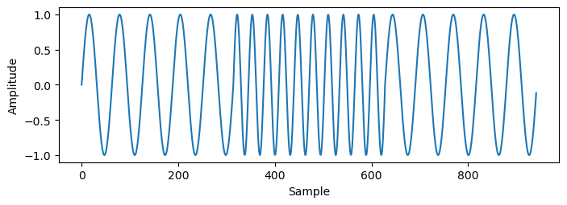

Warning: I don't advise you use the following as a guide to back up your Pokemon save files. This is a proof of concept done out of curiosity. If you make one small mistake it could easily result in you losing your entire save file, and even if you do everything correctly your hall of fame records won't survive (since encountering Missingno will corrupt your hall of fame data[5]). Also, some of the glitches that I use only work on the English international version of Pokemon Red/Blue, so if you do want to try it out be careful of the version of the game you're using.
All the code mentioned in this project can be found on GitHub here.
I was recently thinking about how hard it is to back up a Pokemon Red save file. The standard procedure is to buy some kind of hardware like a GB Operator which lets you read the data directly off the cart. This is neat but I'm not really a big fan of spending money, and wouldn't it be cooler if you didn't need any special external hardware to extract your save game?
I had heard whisper of arbitrary code execution (ACE) exploits being done in Pokemon games before. This kind of exploit could let me write and execute my own assembly code within the game itself, but how difficult would it be to pull off? Can a human even do it on real hardware? Can I make the code short enough that it's actually reasonable for a person to write it by hand in game? And even if I can execute arbitrary code, what kind of communication method can I use to send the save file data outside of the Gameboy?
Well, there are a lot of options for transmitting information: An LCD screen, link cable port, speaker, headphone jack, and even an infrared sensor on the Gameboy Color. I want to use a strategy that doesn't require any special hardware, so the IR sensor and link cable port are out. The LCD screen would be an interesting option, but making funny little noises seems a lot simpler than flashing data on an LCD screen. When it comes to audio the headphone jack is a tempting option, since recording audio right out a headphone jack will have much much less background noise compared to recording audio blasted out of a cheap speaker, but I want this method to be as accessible as possible, so ideally it will work on both the speaker and the headphone jack.
So now we have a vague idea of what to do. But how does this ACE I've heard about actually work?
The first generation Pokemon games are famously broken, and also famously well researched by hackers and modders. As it turns out, there are in fact well documented ways for regular old humans to do ACE on regular old Gameboy hardware[1]. The most popular of these methods works by using so called glitch items.
When you use an item in a generation 1 Pokemon game all it does is look up the ID of that item in a table of function pointers, and then jumps to the address in the table[2]. This works perfectly fine when using regular items, since they have properly defined addresses in this table. However, if you somehow obtain an item with an ID that does not have a valid entry in the table you can end up jumping into parts of memory that are not supposed to be executed. The items that do this are called glitch items. One such glitch item, 8F, is especially useful because it jumps into the beginning of your Pokemon party data. This data can then be manipulated to do ACE!
Executing the data in your Pokemon party as code is useful, but it's also pretty difficult and inconvenient to change. Because of this, ACE exploits conventionally use a very small amount of "bootstrap" code in your Pokemon party that jumps into easier to manipulate memory and executes code there. Usually this easier to manipulate memory location is your item pack, since it allows you to write code by simply storing items in your bag.
An exceptional and in depth guide on how to obtain 8F and set up the bootstrap to execute code in your item pack can be found here. I don't want to reinvent the wheel by trying to write a better guide than that, so I'll just summarize how it works:
Once you do all that you can use 8F and it will execute items in your bag as code, starting with the 3rd item. Why the 3rd item? Because the first item is 8F, and it's often useful to have the 2nd item free to be whatever you want so that it can easily be manipulated by the ACE itself (which we will be doing a lot of).
Executing code in the bag is great, but acquiring the items needed to write that code is going to be quite a challenge. On top of that, we can only store 20 items in the bag (only 18 of which will be executed as code) which pretty severely limits how much code we can write. These problems will be solved in due time, but first we should figure out how exactly the data will be encoded.
The simplest way to encode the save data as audio would be to use a binary amplitude modulation scheme where a 1 is represented by the presence of audio and a 0 is the absence of audio. That might have worked fine, but I didn't end up using it because I was worried that there might be too much background noise and I would have a hard time telling a 0 from a 1. Luckily, changing the frequency of a sound on a Gameboy doesn't require any more code than changing the amplitude, so instead I opted to use binary frequency shift keying (BFSK). BFSK is pretty simple: you choose two carrier frequencies, one of which represents a zero while the other represents a 1. Then you can send any information you want by switching between those two frequencies.

With the encoding scheme chosen, we now need to choose what two frequencies to use and what bitrate to send the data at. I decided that I didn't want the save file to take more than 10 minutes to send, so I chose a bitrate of 1000 bits per second (a save file is 32kb which should take about 4.2 minutes to send at that bitrate). I then (pretty arbitrarily) chose the frequencies 5041hz and 7281hz based on the fact that they are significantly higher than the data frequency of 1000hz, and lower than 10khz (I'm now fairly certain that a Gameboy would have no problem making 10khz noises but at the time I wasn't sure about its frequency range so I kept it low). I had originally intended to actually spend some time optimizing the data rate and frequencies, but these options worked well enough so I was too lazy to fix it decided to leave it as an exercise to the reader.
Encoding the data is pretty straightforward since we just need to change the frequency of a square wave once a millisecond, but decoding it is a bit trickier. Probably the easiest way to decode BFSK involves splitting the received signal in two by separating the 1s from the 0s, processing the 1s and 0s individually, and then adding the two resulting processed signals together[6][7]. This is not by any means the most efficient method but it is fast enough for this project (runs in less than a second on my machine). To show you how it's done, here's an example of audio from a real recording that contains a series of alternating 1's and 0's:
First we can use two bandpass filters to create two new signals: one signal that has all frequencies removed except those around 5041hz (the frequency of the zeros), and another signal that only keeps the frequencies around 7281hz (the ones): On the top you can see the ones being filtered from the zeros and on the bottom... uhhh hmm well the ones don't look nearly as good as the zeros but the filter is doing something over there too. I guess I probably should have picked frequencies that were further away from each other. But hey, it works.
The next step is to take the absolute value of each signal: Then use a moving average to find each signal's envelope: And finally we can subtract the zero envelope from the one envelope to get the data:
The first time I tried to send any data using this scheme the first couple bytes were correct but everything else was a complete mess. Looking closer at where I'm sampling the data made the problem pretty obvious:
My sampling rate and the rate that the bits were being sent at weren't quite the same, causing the sampling locations to slowly drift away from the center of each bit. This makes sense, since to send each bit I'm just writing to a frequency register and then waiting for 1ms to pass, which doesn't take into account the time to execute any of the other code in the program. On top of this there can be slightly different code executed each time a bit is sent so the timing isn't even consistent. The easiest way to fix this is by adding some sync bits; After every byte I send the bits 0 1 0 and then find where the center of the 1 bit is. Using this information I can figure out where the center of the next byte's bits are much more accurately. This allowed me to send all 32kb of the save file no problem, but it also means that I'm now sending 352000 bits instead of 256000, which raises the total time to send the data up to about 6 minutes.
I also decided that I wanted the decode script to be able to automatically find the beginning of the data in an audio recording instead of needing a human to manually chop out all the noise before the beginning of the data by hand. I implemented this by adding a preamble which consists of two bytes of repeating 1's and 0's at the start of the data. To find the beginning of the data the decode script can iterate through the recorded audio a few samples at a time until it decodes the preamble correctly. In retrospect this may have been a mistake because it's not technically necessary and it adds more bytes to the ACE code which needs to be painstakingly written byte by byte in game. But it's also fun and more magical to see your data get decoded without doing any manual preprocessing :)
To understand how it all fits together, here's how two bytes of data (0xEA8B) would be encoded with the preamble and sync bits:
After some hard work I was able to fit all the assembly code needed to send the BFSK encoded data into exactly 100 bytes. This includes setting up all the registers I need, reading the whole save file, sending all the bits, and returning execution back to the the game. I won't go over it in depth here, but if you want you can look at it on my GitHub.
With that out of the way, lets get back to the ACE.
Since a lot of our code will be written inside the item bag, it's important to understand how exactly the data in the bag is laid out. Inside the bag there are 20 item slots, each of which contains two bytes of data. The first byte tells you the ID of the item in that slot, and the second byte tells you how many of that item is in that slot. For example: master balls have the item ID 1, so if you had a slot in your bag with 8 master balls they would be encoded as 0x0108. Usually an item combined with an item count is referred to as a "stack" of items, so in this case we would have a stack of 8 master balls.
Now, let's actually write an exploit. Remember that with 8F we can easily execute code in the bag, but getting the items needed to write that code can be a challenge. To make it easier to acquire items, we can use ACE to run an exploit from the ACE guide that I mentioned earlier. This exploit lets you duplicate items by subtracting 1 from the total count of the 2nd item in your inventory.
But hold on, to duplicate items wouldn't we want to add 1, not subtract? Well, subtracting 1 is actually just as useful as adding 1 because when you subtract 1 from a stack of 0 items you get a stack of 255 items (the reason I chose to subtract here instead of add is because the simplest code to add requires a stack of the same items that will be used in another ACE exploit later, and manipulating multiple stacks of the same item can get pretty hairy since they can accidentally get combined into a single stack of items if you're not careful).
The code for the subtract 1 exploit is as follows:
dec bc
dec hl
dec [hl]
inc bc
ret
The code takes advantage of the fact that the hl register already contains the address of the ID of the third item in the bag (since the hl register was used to jump to this code). It then decrements hl to get to the number of items in the 2nd slot in the bag, and then decrements the item count there. The dec bc and inc bc instructions can be ignored: they're filler instructions which will allow this code to be written in the bag using easily accessible items.
To convert this code into item stacks we first need to assemble it into machine code. You can do this by hand using this helpful table which tells you how each Gameboy opcode is encoded. This will get us the following bytes:
0x0b
0x2b
0x35
0x03
0xc9
Now to convert the machine code into item stacks we can turn each pair of bytes into one stack of items. The first byte in each pair is the item ID for the stack and the second byte is the number of items in the stack. To find out what items correspond to which IDs, you will need to look it up in a table like the one found here. In this case, 0x0b corresponds to the item ID for antidotes. we will need 43 antidotes since 0x2b in decimal is 43. Likewise, 0x35 is the item ID for revives, of which we'll need 3. 0xc9 is the item ID for TM01, and it doesn't matter how many of that we have since the code ends there. After putting all these items in the bag, it will look like this:
| Item | Amount |
| 8F | |
| Anything | |
| Antidote | x43 |
| Revive | x3 |
| TM01 |
To run this code all you have to do is use 8F. Once you do so the total number of items in the "Anything" stack will decrease by 1. This not only lets you duplicate rare items, but also lets you hold more than 99 items in a single stack. Note that when you have more than 99 items in one stack the first two digits do not get displayed correctly. This makes it hard to keep track of exactly how many items are in each stack, so be careful manipulating stacks that get this large.
Using this exploit will allow us to write our 2nd exploit: the ability to transmute any item stack into a stack of any other kind of item. This transmutation is done by adding 1 to the ID of the item in the 2nd slot in your inventory. To understand what adding 1 to the ID of an item will turn it into you can consult the table I mentioned earlier which lists every item in the game and its corresponding ID. The code to do the transmutation looks like this:
dec bc
dec hl
inc bc
dec hl
inc [hl]
ret
To run this code you just need to acquire two more item stacks: 43 great balls and 201 full heals. Your bag should look like this:
| Item | Amount | |
| 8F | ||
| Anything | ||
| Antidote | x43 | |
| Great Ball | x43 | <- new |
| Full Heal | x201 | <- new |
| Revive | x3 | |
| TM01 | ||
The line above the Revives indicates where the transmutation function ends. 201 in hex is 0xc9 which is a return instruction, and so no code past the full heal is executed. This means that the items past the line can be in any order.
Now we can move items around in the bag to do either the first or second exploit, which means we can get any number of any item. This is nice but setting up larger programs is still tough. The full program to send the save file is 100 bytes long, which is too much data to just store in the item bag. Luckily the PC can store 50 items - exactly 100 bytes, so we could bootstrap into there instead. However, there are other issues: not only would gathering 50 items stacks using our current methods take a very long time, but, more importantly, you can't normally move multiple item stacks of the same item (for example, Pokeball x10 and Pokeball x20) from your bag into the PC without having them merge together into a single item stack in the PC (Pokeball x30). Because of this, I wrote another exploit to create a convenient and fast method of writing to the item box in the PC.
First, let's get the items needed to execute a jump instruction to run code in the PC item box. This only requires two more items stacks: 2 TM13s and 59 of a glitch item called H#. H# is a bit tricky to acquire because the names of many other glitch items also look similar. It also has a different appearance depending on what game you're playing. In Pokemon Red it will be called H# but in Blue it will simply be called #. What does stay the same is that its item ID is always 0xc3, so to acquire H# it may be easier to find a more recognizable item with a smaller ID and then count how many times you've run the transmutation exploit.
Once you get the two new item stacks you can move them to the bottom of your bag to be used later. Your bag should look something like this:
| Item | Amount | |
| 8F | ||
| Anything | ||
| Antidote | x43 | |
| Great Ball | x43 | |
| Full Heal | x201 | |
| Revive | x3 | |
| TM01 | ||
| H# | x59 | <- new |
| TM13 | x2 | <- new |
Now we can set up the code that will allow us to conveniently write to the PC item box. This is what we'll be writing (I added comments this time to make it a bit less confusing since it's weird self modifying code):
; get item count and reset it to 0
dec hl
ld a, [hl]
ld [hl], 0
; store data byte in PC
ld bc, $d53b
ld [bc], a
; update PC address by modifying
; the above "ld bc, $d53b" line
ld l, $27
inc [hl]
ret
Before I explain how to use it, I'll show you how to set it up in your bag:
| Item | Amount | |
| 8F | ||
| Anything | x243 | <- new |
| Secret Key | x126 | <- new |
| Max Revive | x0 | <- new |
| Master Ball | x59 | <- new |
| TM13 | x2 | |
| X Accuracy | x39 | <- new |
| Full Heal | x201 | |
| Antidote | x43 | |
| Great Ball | x43 | |
| Revive | x3 | |
| TM01 | ||
| H# | x59 | |
Note that instead of being able to have any number of any item in the 2nd item slot you now need to have exactly 243. This code looks at the number of items in the 2nd item slot in the bag, then copies that value into first byte of the PC item box, resets the bag's 2nd item slot count to zero, and then increments the total number of master balls by 1 so that the next time you run the code it will write to the next address in the PC. What this means is that in order to write a byte to the PC item box you just need to toss some number of items from your 2nd item slot, then use 8F. For a better explanation, here's a video of me using it:
In order to write all 100 bytes to the PC you will need to throw away items and use 8F 100 times. What if you mess up? Well, since the number of master balls controls where in the PC you're writing to you can go back to redo a byte simply by tossing a master ball.
The very first time you run this code you don't need to throw away any items, since you already have a stack of 243 items in your 2nd item slot which corresponds to the first byte of the PC code (0xf3). The next 99 times you use 8F you'll need to throw out the correct number of items before using 8F. The number of items you need to throw out are as follows:
194, 128, 32, 218, 194, 239, 32, 219, 194, 137, 32, 220, 81, 32, 240, 194, 128, 32, 239, 194, 16, 32, 238, 194, 121, 32, 236, 194, 86, 22, 0, 0, 51, 131, 43, 194, 86, 51, 131, 43, 242, 0, 223, 0, 192, 143, 223, 0, 96, 214, 51, 131, 43, 194, 64, 68, 224, 9, 244, 194, 252, 71, 224, 22, 39, 250, 248, 51, 118, 43, 194, 192, 250, 253, 51, 118, 43, 55, 233, 11, 200, 252, 194, 26, 232, 254, 194, 18, 32, 237, 81, 196, 224, 3, 15, 251, 224, 20, 55
Finally, once you've written all 100 bytes to the PC you can move the H# and TM13 stacks up to jump into the PC code:
| Item | Amount | |
| 8F | ||
| Anything | ||
| H# | x59 | |
| TM13 | x2 | |
| Secret Key | x126 | |
| Max Revive | x0 | |
| Master Ball | x59 | |
| X Accuracy | x39 | |
| Full Heal | x201 | |
| Antidote | x43 | |
| Great Ball | x43 | |
| Revive | x3 | |
| TM01 | ||
Now, go into a quiet place, put a microphone as close to the Gameboy speaker as possible, and turn the volume up as high as it will go. When I say "as close to the Gameboy speaker as possible" I mean it needs to be resting right on top of the speaker for the recording to be as clean as possible. Then use 8F by pressing the A button *as slowly as possible* in order to not make any noise. In all of my test runs the only noise that ever messed up the recording was the sound of the button press, so it must be as quiet as possible. After that the game will freeze and you will hear horrible noises come out of your Gameboy for about 6 minutes before it resumes. I recommend using 8F a 2nd time to record another take just in case your first recording got messed up.
If you're curious, here's an example of what it sounds like (volume warning):
Once you've recorded the audio you need to convert it into a .wav file for the decoding script. Any .wav format with a sample rate of 44100hz should work, but for most of my tests I used unsigned 8 bit PCM. To decode the audio run python decode_save_file.py $wav_file_location and it will (hopefully!) generate a .sav file that you can use in an emulator.
Also, here are a couple of projects I ran across while making this that are very similar and also worth checking out:
GameBoy Audio Dumper - Tools to dump Gameboy ROMs over audio
Dumping the ROM of a GBA game by crashing it - Exactly what it sounds like
[1] https://glitchcity.wiki/wiki/Arbitrary_code_execution#In_Generation_I
[2] https://glitchcity.wiki/wiki/Arbitrary_code_execution
[3] https://glitchcity.wiki/wiki/Old_man_glitch
[4] https://glitchcity.wiki/wiki/Dry_underflow_glitch
[5] https://glitchcity.wiki/wiki/User:CytricAcid/Beginner's_Guide_To_ACE/US_Red_and_Blue_Guide
[6] https://www.youtube.com/watch?v=KGP_x9930Tc
[7] https://www.allaboutcircuits.com/technical-articles/fsk-explained-with-python/
[8] https://www.pastraiser.com/cpu/gameboy/gameboy_opcodes.html
[9] https://glitchcity.wiki/wiki/The_Big_HEX_List
[10] https://www.epilogue.co/product/gb-operator